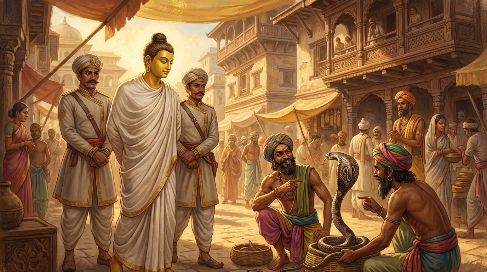

6. සීලවීමංස ජාතකය (86)
“සීලං කිරෙව කල්යාණං” යන මේ ජාතක දේශනාව බුදුරජාණන් වහන්සේ ජේතවනාරාමයෙහි වැඩ වසන සමයෙහි, තමාගේ ශීලය විමසා බලන එක් බමුණෙකු අරබයා වදාළ සේක. හෙතෙම කොසොල් රජතුමා නිසා ජීවත් වෙයි. තෙරුවන් සරණ ගිය, නොකඩවා පන්සිල් රකින, වේදයෙහි පරතෙරට ගිය අයෙකි. රජතුමා “මේ තෙමේ සිල්වතෙකැ”යි ඔහුට විශේෂ ගෞරව සම්මාන දක්වයි. හෙතෙම මෙසේ සිතුවේය: “මේ රජ තෙමේ මට අනෙක් බමුණන්ට වඩා විශේෂ සම්මාන කරයි, ඉතා ආදරයෙන් මා දෙස බලයි. කිම, මොහු මාගේ ජාතිය, ගෝත්රය, කුලය හෝ දක්ෂතා නිසා මේ සම්මාන කරන්නේ ද? නොඑසේ නම් මාගේ සිල්වත්කම නිසා දැයි විමසා බලන්නෙමි.” හෙතෙම එක් දවසක් රාජකාරියට ගොස් නැවත ගෙදර එන අතරමගදී, එක් රන්කරුවෙකුගේ (මුදල් මාරු කරන්නෙකුගේ) පුවරුවකින් නොවිචාරා එක් කහවණුවක් ගෙන ගියේය. රන්කරුවා බමුණා කෙරෙහි ඇති ගෞරවය නිසා කිසිවක් නොකියා සිටියේය. දෙවැනි දවසේ කහවණු දෙකක් ගත්තේය. රන්කරුවා එලෙසම ඉවසා සිටියේය. තෙවැනි දිනයේ කහවණු මිටක් ම ගත්තේය. එවිට රන්කරුවා, “අද නුඹේ තෙවැනි දිනයයි. රාජ භාණ්ඩාගාරය කොල්ලකන සොරා මා විසින් අල්ලා ගන්නා ලද්දේය” යි තුන් වරක් කෑගැසුවේය. එවිට මිනිස්සු වටින් පිටින් දුවගෙන විත්, “නුඹ මෙතෙක් කල් සිල්වතෙකු මෙන් හැසිරුණෙහිය”යි බැන වැදී, පහර දෙක තුනක් දී, ඔහු බැඳ රජු වෙත ගෙන ගියහ.
රජතුමා කලකිරීමට පත්ව, “බමුණ, ඔබ මෙබඳු පහත් ක්රියාවක් කුමක් නිසා කළෙහිදැ”යි අසා, “යන්න, මොහුට රාජ දණ්ඩනය පමුණුවන්නැ”යි නියෝග කළේය. බමුණා, “මහරජ, මම සොරෙක් නොවෙමි”යි පැවසීය. “එසේ නම් කුමක් නිසා පුවරුවෙන් කහවණු ගත්තෙහි ද?” “ඔබ මා කෙරෙහි ඉතා විශේෂ ගෞරවයක් දක්වයි. ‘කිමෙක් ද, රජතුමා මාගේ ජාති ගෝත්රාදිය නිසා මේ විශේෂ සම්මාන කරයි ද? නොඑසේ නම් ශීලය නිසා දැ’යි විමසනු පිණිස මෙය මා විසින් කරන ලදී. දැන් මා විසින් එය ඒකාන්තයෙන්ම දැනගන්නා ලදී. ඔබ මා හට සම්මාන කරන ලද්දේ ශීලය නිසාමය. ජාති ගෝත්රාදිය නිසා නොවේ. එසේ හෙයින් දැන් මට රාජ දණ්ඩනය පමුණුවනු මැනව. මම මේ කරුණෙන් ‘මේ ලෝකයෙහි ශීලය ම උතුම් ය, ශීලය ම ප්රධාන ය’යි තීරණය කළෙමි. ගිහි ගෙයි සිට ක්ලේශයන් පරිභෝජනය කරමින් මේ ශීලයට අනුරූපව හැසිරීමට මට නොහැකිය. අද ම ජේතවනයට ගොස් බුදුරජාණන් වහන්සේ සමීපයේ පැවිදි වන්නෙමි. දේවයන් වහන්ස, මට පැවිදි වීමට අවසර දෙනු මැනවැ”යි පවසා, රජුගෙන් අවසර ලබා ජේතවනය දෙසට පිටත් විය.
ඉක්බිති ඔහුගේ ඤාති මිත්රාදීහු රැස්ව, ඔහු වැළැක්වීමට උත්සාහ කළ නමුත් නොහැකි වී නැවතුණහ. ඔහු බුදුරජාණන් වහන්සේ වෙත ගොස් පැවිද්ද ඉල්ලා, පැවිදි උපසම්පදාව ලබා, නොපිරිහෙළා කමටහන් වඩා විදසුන් වැඩීමෙන් රහත් බවට පැමිණියේය. ඉක්බිති බුදුරජාණන් වහන්සේ වෙත එළැඹ, “ස්වාමීනි, මාගේ පැවිද්ද මුදුන් පත් විය (සාර්ථක විය)” යැයි රහත් බව ප්රකාශ කළේය. ඔහුගේ ඒ රහත් බව ප්රකාශ කිරීම මහා සංඝයා අතර ප්රකට විය. ඉක්බිති එක් දිනක් දම් සභාවෙහි රැස්වූ භික්ෂූන් වහන්සේලා, “ඇවැත්නි, අසවල් නම් ඇති රාජ උපස්ථායක බමුණා තමාගේ ශීලය විමසා බලා, රජුගෙන් අවසර ගෙන පැවිදි වී රහත් බවෙහි පිහිටියේය”යි ඔහුගේ ගුණ කියමින් සිටියහ. බුදුරජාණන් වහන්සේ වැඩමවා, “මහණෙනි, දැන් කවර කථාවකින් යුතුව හුන්නාහු ද?” යි විචාරා, “මේ නම් කථාවෙනැ”යි කී කල්හි, “මහණෙනි, මේ බමුණා තමාගේ ශීලය විමසා බලා පැවිදි ව තමාට පිහිටක් සාදා ගත්තේ දැන් පමණක් නොවේ; පෙර නුවණැත්තෝ ද තමාගේ ශීලය විමසා බලා පැවිදි ව තමාට පිහිටක් සාදා ගත්හ”යි වදාරා අතීත කථාව ගෙනහැර දැක්වූ සේක.
අතීතයෙහි බරණැස් නුවර බ්රහ්මදත්ත රජු රාජ්ය කරන කල්හි බෝධිසත්ත්වයෝ රජුගේ පුරෝහිත බමුණා වූහ. හෙතෙම දන්දීමෙහි ඇලුණේය, සිල්වත් අදහස් ඇත්තේය, පන්සිල් සුරකින්නේය. රජතුමා සෙසු බමුණන්ට වඩා වැඩියෙන් ඔහුට සම්මාන කරයි. සෙසු සියල්ල පෙර කථාව මෙනි. බෝසතුන් බැඳ රජු වෙත ගෙන යනු ලබන විට, අතරමග වීදියෙහි අහිගුණ්ඨිකයෝ නාගයෙකු ලවා ක්රීඩා කරවමින් උගේ වලිගයෙන් අල්ලති, බෙල්ලෙන් අල්ලති, ගෙලෙහි ඔතා ගනිති. බෝසත්හු ඔවුන් දැක, “දරුවනි, ඔය නාගයා වලිගයෙන් නොගන්න, බෙල්ලෙන් නොගන්න, ගෙලෙහි ඔතා නොගන්න. මූ තොපට දෂ්ට කොට මරණයට පත් කළ හැකිය”යි කීහ. එවිට අහිගුණ්ඨිකයෝ, “බමුණ, මේ නාගයා සිල්වත්ය, සිරිත් විරිත් දන්නේය. ඔබ වැනි දුස්සීලයෙක් නොවේ. ඔබ වනාහි තමාගේ දුස්සීලකම නිසාත් අශීලාචාරකම නිසාත් රාජ භාණ්ඩාගාරය කොල්ලකෑ සොරෙකැයි බැඳගෙන යනු ලබන්නෙහිය”යි කීවාහ.

බෝසත්හු මෙසේ සිතූහ: “මේ නාගයෝ පවා දෂ්ට නොකරන කල්හි, හිංසා නොකරන කල්හි ‘සිල්වත්’ යන නාමය ලබති. මනුෂ්යයන් ගැන කියනුම කවරේ ද? මේ ලෝකයෙහි ශීලයම උතුම් වේ. ඊට වඩා උසස් දෙයක් ලොව නැත.” ඉක්බිති රාජ පුරුෂයෝ ඔහු ගෙන ගොස් රජුට දැක්වූහ. රජතුමා, “දරුවනි, මේ කවරෙක් දැ”යි විචාළේය. “දේවයන් වහන්ස, මොහු රාජ භාණ්ඩාගාරය කොල්ලකන සොරෙකි.” “එසේ නම් මොහුට රාජ දණ්ඩනය පමුණුවව්.” බමුණා, “මහරජ, මම සොරෙක් නොවෙමි”යි කීය. “එසේ නම් කුමක් නිසා කහවණු ගත්තෙහි ද?” යි ඇසූ විට, පෙර පරිද්දෙන් සියල්ල ප්රකාශ කොට, “එසේ හෙයින් මම මේ කාරණයෙන් ‘මේ ලෝකයෙහි ශීලයම උතුම් ය, ශීලය ම ප්රධාන ය’යි නිගමනය කළෙමි”යි පවසා, “මේ කාරණය මෙසේ තිබේවා, මේ ඝෝර විෂ ඇති සර්පයා පවා දෂ්ට නොකරන, හිංසා නොකරන කල්හි ‘සිල්වතෙකැ’යි කියනු ලබයි. මේ කාරණයෙන් ද ශීලයම උතුම් වේ, ශීලයම ශ්රේෂ්ඨ වේ” යැයි ශීලය වර්ණනා කරමින් මේ ගාථාව පැවසීය:
“ලොව ආචාර ශීලය ම යහපත් ය. ලෝකයෙහි ශීලය අනුත්තර (උසස් ම) දෙයයි. බලන්න, ඝෝර විෂ ඇති නාගයා පවා (දෂ්ට නොකරන විට) ‘සිල්වතෙකැ’යි (සලකා) පහර නොලබයි.”
එහි “සීලං කිරෙව” යනු කය, වචන, සිත යන තිදොරින් (පාපය) ඉක්මවා නොයෑම නම් වූ ආචාර ශීලයම ය. “කිර” යනු අනුශ්රව (අසන්නට ලැබීම/ජනප්රවාද) අර්ථය හඟවයි. “කල්යාණං” යනු වඩාත් සුන්දර/යහපත් බවයි. “අනුත්තරං” යනු සියලු ගුණ ලබා දෙන බැවින් ප්රධාන වූ බවයි. “පස්ස” යනු තමා විසින් ඇස් පනාපිට දුටු කාරණය ඉදිරිපත් කරමින් කියයි. “සීලවාති න හඤ්ඤති” යනු ඝෝර විෂ ඇති සර්පයෙකු වුව ද දෂ්ට නොකිරීම සහ හිංසා නොකිරීම පමණකින් ‘සිල්වතෙකැ’යි ප්රශංසා ලබයි; (එනිසා) පහර නොකයි, වෙහෙසට පත් නොවෙයි. මේ කාරණයෙන් ද ශීලය ම උතුම් ය.
මෙසේ බෝධිසත්ත්වයෝ මේ ගාථාවෙන් රජුට දහම් දෙසා, පස්කම් සැප හැර දමා ඍෂි ප්රවෘජ්යාවෙන් පැවිදි ව, හිමවතට වැද, පඤ්ච අභිඥා සහ අෂ්ට සමාපත්තීන් උපදවා (මරණින් මතු) බ්රහ්ම ලෝකයෙහි උපන්හ.
බුදුරජාණන් වහන්සේ මේ ධර්ම දේශනාව ගෙනහැර දක්වා ජාතකය ගළපා වදාළ සේක. “එකල රජතුමා දැන් ආනන්ද ස්ථවිරයන් ය. රජ පිරිස දැන් බුදු පිරිස ය. පුරෝහිත බමුණා නම් මම ම වෙමි.”
හයවැනි වූ සීලවීමංසක ජාතක වර්ණනාව නිමි.